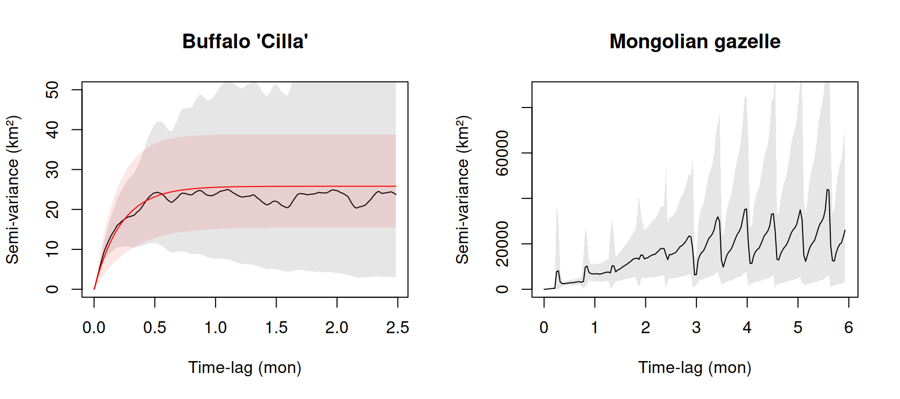

Practical 6 — Home ranges, four ways
Session 6 · Home ranges and space use
Goals. Estimate one buffalo’s home range with MCP, KDE (two bandwidths), a Brownian bridge and AKDE; map them together and explain why they differ; use variograms to tell a resident from a nomad; and test every estimator against a simulated animal whose true home range we know.
Time: ~70 minutes. Packages: adehabitatHR, adehabitatLT, ctmm, amt, sf, dplyr, ggplot2.
Setup — one buffalo
buffalo <- read.csv("data/buffalo_kruger.csv.gz") |>
transmute(id = individual.local.identifier, t = as.POSIXct(timestamp, tz = "UTC"),
x = location.long, y = location.lat) |>
filter(!is.na(x), !is.na(y)) |>
distinct(id, t, .keep_all = TRUE) |>
arrange(id, t)
cilla <- buffalo |> filter(id == "Cilla")
# Projected coordinates (UTM 36S) for adehabitatHR, which assumes a plane
cilla_utm <- st_as_sf(cilla, coords = c("x", "y"), crs = 4326) |>
st_transform(32736)
xy <- st_coordinates(cilla_utm)
pts <- SpatialPoints(xy, proj4string = CRS("EPSG:32736"))
nrow(cilla)
#> [1] 3528
range(cilla$t)
#> [1] "2005-07-14 04:35:00 UTC" "2005-12-07 22:16:00 UTC"adehabitatHR predates sf and expects sp objects — hence SpatialPoints(). This is the “messy history” from Session 2 in practice.
Task 1 — Five estimates of one home range
MCP and KDE
mcp95 <- mcp(pts, percent = 95)
area_mcp <- mcp.area(pts, percent = 95, unout = "km2", plotit = FALSE)[[1]]
kd_href <- kernelUD(pts, h = "href", grid = 300, extent = 1)
kd_lscv <- kernelUD(pts, h = "LSCV", grid = 300, extent = 1)
area_href <- kernel.area(kd_href, percent = 95, unout = "km2")[[1]]
area_lscv <- kernel.area(kd_lscv, percent = 95, unout = "km2")[[1]]
c(h_ref_m = kd_href@h$h, h_lscv_m = kd_lscv@h$h,
lscv_converged = kd_lscv@h$convergence)
#> h_ref_m h_lscv_m lscv_converged
#> 1179.1127 117.9113 0.0000Brownian bridge
The bridge needs the trajectory, not just the points, and two variance parameters: sig2, the location error (we assume ~30 m for GPS), and sig1, the animal’s mobility, which liker() estimates by maximum likelihood.
ltr <- as.ltraj(xy = as.data.frame(xy), date = cilla$t, id = "Cilla")
lik <- liker(ltr, sig2 = 30, rangesig1 = c(1, 100), plotit = FALSE)
lik$Cilla$sig1
#> [1] 4.765766
bb <- kernelbb(ltr, sig1 = lik$Cilla$sig1, sig2 = 30, grid = 300, extent = 0.3)
area_bb <- kernel.area(bb, percent = 95, unout = "km2")[[1]]AKDE
ctmm fits a continuous-time movement model first. It wants Movebank-style columns and works in geographic coordinates.
tel <- as.telemetry(
data.frame(timestamp = cilla$t, location.long = cilla$x, location.lat = cilla$y,
individual.local.identifier = "Cilla"),
timeformat = "auto")
guess <- ctmm.guess(tel, interactive = FALSE) # not variogram.fit(): that opens a GUI
fit <- ctmm.select(tel, guess)
ak <- akde(tel, fit)
summary(fit)
#> $name
#> [1] "OUF anisotropic"
#>
#> $DOF
#> mean area diffusion speed
#> 12.31357 18.66457 723.22307 3395.27156
#>
#> $CI
#> low est high
#> area (square kilometers) 286.134732 477.697785 717.553006
#> τ[position] (days) 3.843246 6.451817 10.830936
#> τ[velocity] (minutes) 43.741209 46.707078 49.874048
#> speed (kilometers/day) 15.443023 15.707215 15.971346
#> diffusion (square kilometers/day) 7.233106 7.790621 8.368539
akde_ci <- summary(ak, units = FALSE)$CI / 1e6 # m² -> km²
akde_ci
#> low est high
#> area (square meters) 241.2526 402.7677 605variogram.fit() in a script
It opens an interactive slider window for choosing starting values by eye — great at the console, fatal in a rendered document. ctmm.guess(..., interactive = FALSE) gives the same starting values automatically.
Your turn
1a. Put all five 95% areas in one table. 1b. Did LSCV converge?
areas <- data.frame(
estimator = c("MCP 95%", "KDE h_ref", "KDE LSCV", "Brownian bridge", "AKDE"),
area_km2 = round(c(area_mcp, area_href, area_lscv, area_bb, akde_ci[2])),
low_km2 = c(NA, NA, NA, NA, round(akde_ci[1])),
high_km2 = c(NA, NA, NA, NA, round(akde_ci[3]))
)
areas
#> estimator area_km2 low_km2 high_km2
#> 1 MCP 95% 274 NA NA
#> 2 KDE h_ref 290 NA NA
#> 3 KDE LSCV 106 NA NA
#> 4 Brownian bridge 110 NA NA
#> 5 AKDE 403 241 605A factor of about four between the smallest and largest estimate, for the same animal and the same fixes. LSCV did not converge — kernelUD() warned — and chose a bandwidth of about 100 m, which splits the range into fragments around clusters of consecutive fixes. Only AKDE comes with a confidence interval.
1c. Show yourself the autocorrelation problem: thin the fixes and watch the KDE area.
thin_tab <- lapply(c(1, 2, 6, 12, 24, 48), function(k) {
keep <- seq(1, nrow(xy), by = k)
a <- kernel.area(kernelUD(SpatialPoints(xy[keep, ]), h = "href", grid = 200),
percent = 95, unout = "km2")[[1]]
data.frame(every_nth_fix = k, fixes = length(keep), kde95_km2 = round(a))
}) |> bind_rows()
thin_tab
#> every_nth_fix fixes kde95_km2
#> 1 1 3528 290
#> 2 2 1764 306
#> 3 6 588 331
#> 4 12 294 357
#> 5 24 147 369
#> 6 48 74 389If the fixes were independent draws from a fixed UD, the estimate would stabilise as you add data. Instead the densest data give the smallest range: every extra autocorrelated fix adds almost no new information but makes the estimator more confident. That is exactly the bias AKDE corrects.
Task 2 — Map them together
contour_sf <- function(ud, label) {
st_as_sf(getverticeshr(ud, percent = 95)) |>
st_set_crs(32736) |> mutate(estimator = label) |> select(estimator)
}
contours <- bind_rows(
st_as_sf(mcp95) |> st_set_crs(32736) |> mutate(estimator = "MCP 95%") |> select(estimator),
contour_sf(kd_href, "KDE h_ref"),
contour_sf(kd_lscv, "KDE LSCV"),
contour_sf(bb, "Brownian bridge"),
as.sf(ak, level.UD = 0.95) |> st_transform(32736) |>
filter(grepl("est", name)) |> mutate(estimator = "AKDE") |> select(estimator)
)
ggplot() +
geom_sf(data = cilla_utm, size = 0.1, alpha = 0.25, colour = "grey30") +
geom_sf(data = contours, aes(colour = estimator), fill = NA, linewidth = 0.8) +
scale_colour_manual(values = c("MCP 95%" = "grey20", "KDE h_ref" = "#1f6f78",
"KDE LSCV" = "#6fc3cd", "Brownian bridge" = "#b8860b",
"AKDE" = "#c1440e")) +
coord_sf(crs = 32736) +
labs(title = "Cilla: five 95% home ranges", colour = NULL) +
theme_minimal()
This map, and one paragraph explaining why the five estimates differ. For each estimator name the question it answers and the assumption it makes about the fixes. This comparison — not any single number — is the point of the session.
Task 3 — Variograms: is there a home range at all?

Your turn
3a. Which variogram levels off? 3b. Fit a model to the gazelle and compare its range-crossing time with the tracking duration.
Cilla’s variogram rises and then flattens: beyond a lag of a few days her positions are as far apart as they ever get. That asymptote is range residency, and the fitted model’s curve follows it.
The gazelle’s variogram keeps climbing across much of the plot, with no clear plateau. Ignore the saw-teeth: the gazelle was located only every few days, on an irregular schedule, so at some time lags there are very few pairs of fixes and the estimate jumps. Read the overall trend, not the teeth.
fit_gz <- ctmm.select(gz, ctmm.guess(gz, interactive = FALSE))
summary(fit_gz)$CI[c(1, 2), ]
#> low est high
#> area (square kilometers) 5.462251e+04 3.034354e+05 761303.53275
#> τ[position] (months) 8.330046e-01 4.780132e+00 27.43041
c(tracking_days = as.numeric(diff(range(gz$t))) / 86400)
#> tracking_days
#> 351.2088The gazelle’s estimated range-crossing time is months long, with a confidence interval whose upper end exceeds the whole study. In the time it was tracked, it crossed its “range” only a handful of times — perhaps not at all — so the area estimate spans an order of magnitude. More fixes per day would not help; only a much longer track could. For a nomadic species, the honest answer may be that a home range is the wrong summary.
Task 4 — Ground truth
In Session 5 we built a central-place walker. Because we wrote its rule, we can compute its true 95% home range by simulating it for a very long time.
source("R/simulators.R")
true95 <- truth_area(0.95)
true95
#> [1] 805.22Now pretend it is a collared animal: sample it every hour for ~69 days and estimate its range.
sim <- truth_animal() # 5,000 steps of 20 minutes
obs <- sim[seq(1, nrow(sim), by = 3), ] # an hourly GPS fix
obs$t <- as.POSIXct("2026-01-01", tz = "UTC") + (obs$step - 1) * 20 * 60
sim_pts <- SpatialPoints(obs[, c("x", "y")])
est <- c(
MCP = mcp.area(sim_pts, percent = 95, unout = "km2", plotit = FALSE)[[1]],
KDE_href = kernel.area(kernelUD(sim_pts, h = "href", grid = 200), percent = 95, unout = "km2")[[1]],
KDE_LSCV = kernel.area(suppressWarnings(kernelUD(sim_pts, h = "LSCV", grid = 200)),
percent = 95, unout = "km2")[[1]]
)
# AKDE: park the simulated animal in UTM 36S so ctmm gets longitude/latitude
ll <- st_coordinates(st_transform(
st_as_sf(data.frame(x = obs$x + 4e5, y = obs$y + 7.3e6), coords = c("x", "y"), crs = 32736),
4326))
sim_tel <- as.telemetry(data.frame(timestamp = obs$t, location.long = ll[, 1],
location.lat = ll[, 2], individual.local.identifier = "truth"),
timeformat = "auto")
sim_fit <- ctmm.select(sim_tel, ctmm.guess(sim_tel, interactive = FALSE))
sim_ci <- summary(akde(sim_tel, sim_fit), units = FALSE)$CI / 1e6
round(c(est, AKDE = sim_ci[2], AKDE_low = sim_ci[1], AKDE_high = sim_ci[3],
TRUTH = true95))
#> MCP KDE_href KDE_LSCV AKDE AKDE_low AKDE_high TRUTH
#> 661 800 491 1229 493 2295 805One animal is one draw: an estimator can be lucky. The fair test repeats the experiment on many independent animals. That takes ~20 minutes, so it has been run for you by R/hr_ground_truth.R; the results are in data/hr_ground_truth.csv.
Your turn
4a. For each estimator, plot estimate / truth across the replicates. 4b. How often does AKDE’s 95% confidence interval contain the truth?
long <- reps |>
tidyr::pivot_longer(c(MCP, KDE_href, KDE_LSCV, BBMM, AKDE),
names_to = "estimator", values_to = "km2") |>
mutate(ratio = km2 / true95,
estimator = factor(estimator, c("MCP", "KDE_href", "KDE_LSCV", "BBMM", "AKDE")))
ggplot(long, aes(estimator, ratio)) +
geom_hline(yintercept = 1, linetype = 2, colour = "firebrick") +
geom_boxplot(fill = "#1f6f78", alpha = 0.25, outlier.shape = NA) +
geom_jitter(width = 0.12, size = 1.6, colour = "#1f6f78") +
labs(x = NULL, y = "Estimate / true area",
title = "Twenty simulated animals, 69 days of hourly fixes each") +
theme_minimal()
long |>
group_by(estimator) |>
summarise(median_ratio = round(median(ratio), 2),
spread_IQR = round(IQR(ratio), 2), .groups = "drop")
#> # A tibble: 5 × 3
#> estimator median_ratio spread_IQR
#> <fct> <dbl> <dbl>
#> 1 MCP 0.87 0.31
#> 2 KDE_href 0.98 0.31
#> 3 KDE_LSCV 0.64 0.17
#> 4 BBMM 0.42 0.08
#> 5 AKDE 1.57 0.98
c(AKDE_CI_covers_truth = mean(reps$AKDE_low <= reps$true95 & reps$AKDE_high >= reps$true95))
#> AKDE_CI_covers_truth
#> 0.9Every estimator fails in a characteristic way, and now you can see which way:
- MCP and KDE with LSCV sit mostly below the line — LSCV in every single replicate. LSCV’s tiny bandwidth fragments the utilisation distribution around clusters of autocorrelated fixes.
- The Brownian bridge sits far below, and tightly: about 40% of the true area, every time. It is not wrong — it answers a different question, where the animal went in 69 days, not where it lives.
- KDE with \(h_\text{ref}\) is close to the truth on average. That is not luck: \(h_\text{ref}\) is the optimal bandwidth for a single, roughly circular hump, which is exactly what this central-place walker produces. Real ranges such as Cilla’s are lumpy and multimodal, and there \(h_\text{ref}\) over-smooths. A method that works on the animal it assumes can fail on the animal you have.
- AKDE is the surprise. Its point estimates run high and vary a lot from animal to animal — yet its 95% confidence interval contains the truth in about 90% of replicates, close to what it promises.
Why? 69 days is only about seven range-crossing times, so the effective sample size is tiny, and AKDE says so: its intervals are wide because the data are thin. The other estimators are just as uncertain; they simply do not tell you. AKDE’s correction also assumes a continuous-time Gaussian movement model, and our walker is not one — even the most principled estimator rests on a movement model, and misspecifying it costs accuracy.
So the lesson is not “AKDE wins”. It is:
- no estimator is right in general — each is right for a question and an assumption;
- an honest interval beats a precise-looking number;
- simulation with a known truth is how you find out which failure you are exposed to — try it with longer tracks (more range crossings) and see how the picture changes.
Self-check
You double the fix rate of your collars from hourly to every 30 minutes, for the same 3 months. What happens to AKDE’s confidence interval on the home-range area?
AKDE’s effective sample size is roughly the tracking duration divided by the range-crossing time. Sampling faster adds fixes, but not range crossings. To narrow the interval you must track for longer, not more often.
Which estimator would you use to map the corridors an animal actually used during a 2-week dispersal event?
A dispersal event is non-stationary by definition, so a range distribution is meaningless; you want the occurrence distribution — where the animal went — which is exactly what the Brownian bridge estimates.
Before Session 7
- Fieberg et al. (2021), J Anim Ecol 90:1027–1043.
- Make sure
library(survival)loads.